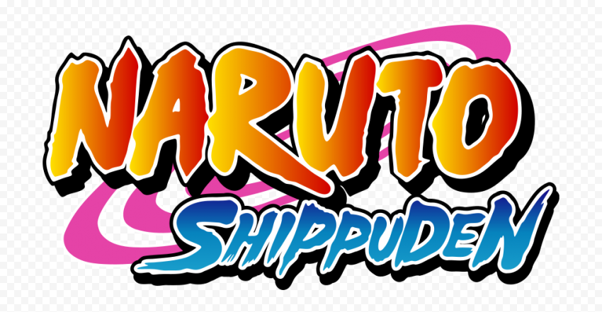

Naruto Shippuden
Naruto Uzumaki wants to be the best ninja in the land. He's done well so far, but with the looming danger posed by the mysterious Akatsuki organization, Naruto knows he must train harder than ever and leaves his village for intense exercises that will push him to his limits.

One Piece
In a seafaring world, a young pirate captain sets out with his crew to attain the title of Pirate King, and to discover the mythical treasure known as 'One Piece. ' An alternate version of Earth, and one that is currently in the midst of the 'Golden Age of Pirates'.

Bleach
High school student Ichigo Kurosaki, who has the ability to see ghosts, gains soul reaper powers from Rukia Kuchiki and sets out to save the world from "Hollows".